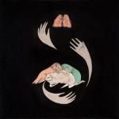
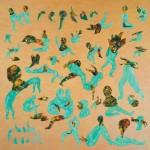

Music Reviews
-

Purity Ring Shrines
Shrines is the dream pop album that I—and I suspect, many others—have been waiting for all year. Canadian duo Purity Ring has created a work that grows with each listen. After a slew of acclaimed singles and 4AD, the hype for this debut is quite high, but it delivers.
Forrest Cardamenis goes to the... -

Reptar Body Faucet
A generic album of pop/post-punk bilge. Sigh.
James McKenna rips into... -
Rufus Wainwright Out of the Game
Rufus Wainwright releases a 70's MOR album. Must try harder.
James McKenna reviews... -

Ice Choir Afar
Revisionist history be damned, Ice Choir makes us all remember that we loved 80's music.
Joshua Pickard grabs his Members Only jacket to review... -
Fang Island Major
Reliably rousing riff-heavy anthems from the crossroads of indie/classic rock, Fang Island as ever sound like "everyone high-fiving everyone".
Stephen Wragg WHOA-OH-OHs... -
Beak> >>
While it hardly tries to reinvent the genre, The second album from Geoff Barrow's side project Beak> offers a chilling, engaging, and surprisingly more accessible take on krautrock that's sure to impress.
Peter Quinton manages to keep his sanity in check as he reviews Barrow's latest oddity -

Heavenly Beat Talent
Beach Fossils bassist John Péna returns to his pre-Fossils moniker to explore sensual ideas, beat-laden impulses and caressing echoes of emotion.
Matthew Bevington explains... -

Nude Beach II
By reconstructing and neatly cataloging their influences for us, Nude Beach have created an album that's as much a testament to their musical heroes as it is a monument to our own.
Joshua Pickard opens the door to his music collection to review... -

Baroness Yellow & Green
The latest effort by the Savannah-based sludge outfit possesses an overabundance of great ideas, but unfortunately falls victim to the crushing weight of its own ambition.
Andrew Ciraulo breaks out his old denim vest and studded leather gauntlets to review the latest effort from Baroness! -
The Antlers Undersea
A year after another brilliant LP, The Antlers have returned with a thought-provoking and enjoyable EP.
Forrest Cardamenis dives...